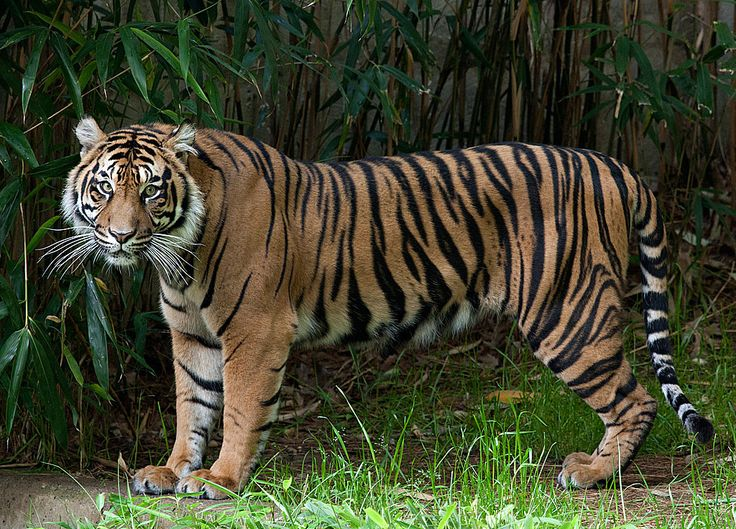
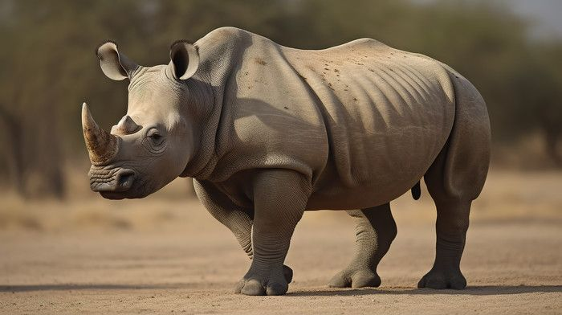
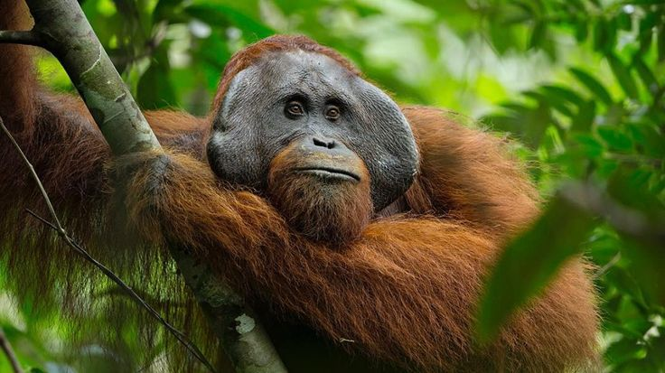
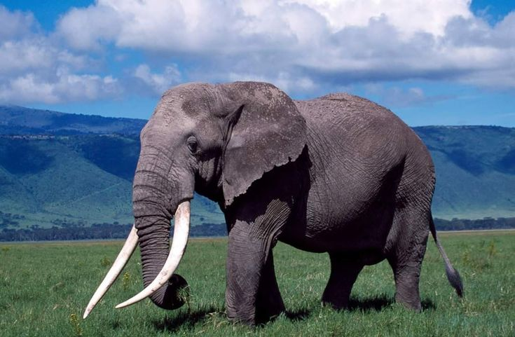
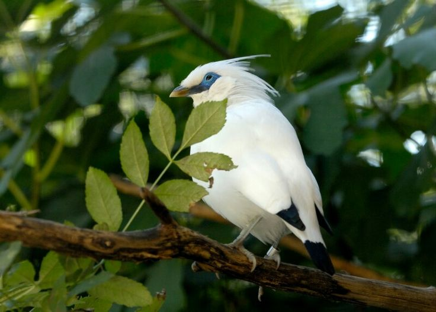
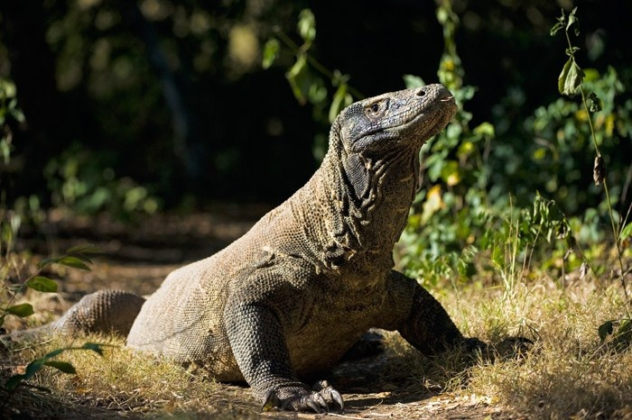

Bersama kita dapat menyelamatkan spesies langka di Bumi. Setiap tindakan yang Anda lakukan melindungi keanekaragaman hayati yang menopang kehidupan di planet kita.
Jutaan spesies bergantung pada ekosistem yang utuh. Ketika hutan hancur, seluruh dunia ikut lenyap untuk selamanya.
Planet ini sedang mengalami kepunahan massal keenam. Aktivitas manusia mendorong spesies menuju kepunahan 1.000 kali lebih cepat dari laju alami.
Visualisasi data populasi satwa liar kunci, ancaman utama, sebaran spesies terancam, serta kondisi tutupan hutan di seluruh kepulauan Indonesia berdasarkan data resmi terkini.
Setiap spesies tidak dapat tergantikan. Pelajari tentang hewan-hewan yang berada di ambang kepunahan.

Satu-satunya subspesies harimau yang tersisa di Indonesia...

Badak paling langka di dunia...

Kera besar paling cerdas...

Subspesies gajah Asia terkecil...

Burung endemik Bali...

Kadal terbesar di dunia...
Laporan Anda dapat menyelamatkan jiwa. Setiap kejadian yang dilaporkan membantu ranger dan konservator merespons lebih cepat.
Menampilkan 5 kejadian terbaru · Klik untuk detail
Berhasil menangani kejadian satwa liar, dari penindakan perburuan hingga penyelamatan hewan terluka.
Spesies yang aktif dilacak dengan kalung satelit, jebakan kamera, dan tim lapangan terlatih.
Negara mitra yang berkontribusi ranger, data, dan dukungan kebijakan untuk jaringan ini.
Tindakan individu terakumulasi. Berikut cara menjadi bagian dari solusi nyata.
Jangan pernah membeli gading, cula badak, atau produk hewan eksotis. Permintaan menciptakan pasar yang mendorong perburuan liar.
Lihat sesuatu, katakan sesuatu. Gunakan sistem pelaporan kami untuk segera menandai aktivitas mencurigakan kepada pihak berwenang.
Dukung minyak sawit berkelanjutan, kayu bersertifikat, dan proyek penghijauan kembali. Setiap pohon sangat berarti.
Donasikan ke program konservasi terpercaya, adopsi seekor hewan, atau relawan bersama kelompok satwa liar lokal.
Kurangi konsumsi daging, pilih makanan laut bersertifikat MSC, dan utamakan produk lokal musiman.
Pilih suaka alam daripada sirkus. Jangan pernah mendukung tempat yang mengeksploitasi hewan liar untuk hiburan.
Bagikan pengetahuan kepada teman dan keluarga. Kesadaran komunitas adalah garis pertahanan pertama melawan kejahatan satwa liar.
Pilih pemimpin yang memprioritaskan perlindungan lingkungan. Tulis surat kepada pembuat undang-undang mendukung legislasi satwa liar.
Jaringan global ranger, ilmuwan, dan warga negara yang bersatu melindungi spesies paling rentan di Bumi. Setiap laporan, setiap donasi, setiap suara sangat berarti.